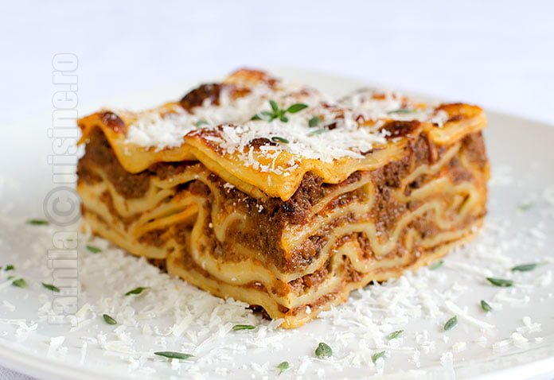

Lasagna Recipe

Description
This is a traditional Italian dish.
Ingrediente
- 500g carne tocată de vită
- 1 ceapă, tocată
- 2 căței de usturoi, tocați
- 800g roșii conservate
- 2 linguri pastă de roșii
- 1 linguriță busuioc uscat
- 1 linguriță oregano uscat
- Sare și piper după gust
- 12 foi de lasagna
- 500g brânză ricotta
- 2 căni brânză mozzarella rasă
- 1/2 cană brânză Parmesan rasă
- 1 ou
- 2 linguri pătrunjel proaspăt, tocat
Pași
- Preîncălziți cuptorul la 190°C.
- Într-o tigaie mare, gătiți carnea tocată de vită, ceapa și usturoiul la foc mediu până când carnea este rumenită. Scurgeți excesul de grăsime.
- Adăugați roșiile conservate, pasta de roșii, busuiocul, oregano, sarea și piperul. Lăsați să fiarbă la foc mic timp de 30 de minute, amestecând ocazional.
- Într-o oală mare, fierbeți foile de lasagna în apă clocotită până devin al dente. Scurgeți și clătiți cu apă rece.
- Într-un bol, combinați brânza ricotta, oul și pătrunjelul.
- Întindeți 1 cană de sos de carne pe fundul unei tăvi de copt de 9x13 inch. Aranjați 3 foi de lasagna peste sos. Întindeți o treime din amestecul de brânză ricotta. Presărați cu o treime din brânza mozzarella. Puneți 1 cană de sos de carne peste mozzarella și presărați cu 1 lingură de brânză Parmesan. Repetați straturile și terminați cu mozzarella și Parmesan rămas.
- Acoperiți cu folie: pentru a preveni lipirea, fie pulverizați folia cu spray de gătit, fie asigurați-vă că folia nu atinge brânza.
- Coaceți în cuptorul preîncălzit timp de 25 de minute. Îndepărtați folia și coaceți încă 25 de minute. Lăsați să se răcească timp de 15 minute înainte de servire.
BAck Home